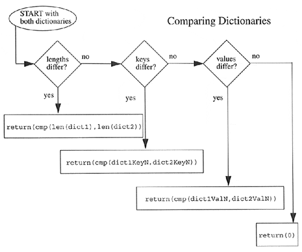

| < BACK | Make Note | Bookmark | CONTINUE > |
Built-in Functions
Standard Type Functions [type(), str(), and cmp()]
The type() built-in function, when operated on a dictionary, reveals an object of the dictionary type. The str() built-in function will produce a printable string representation of a dictionary. These are fairly straightfoward.
In each of the last three chapters, we showed how the cmp() built-in function worked with numbers, strings, lists, and tuples. So how about dictionaries? Comparisons of dictionaries are based on an algorithm which starts with sizes first, then keys, and finally values. In our example below, we create two dictionaries and compare them, then slowly modify the dictionaries to show how these changes affect their comparisons:
>>> dict1 = {}
>>> dict2 = { 'host': 'earth', 'port': 80 }
>>> cmp(dict1, dict2)
-1
>>> dict1['host'] = 'earth'
>>> cmp(dict1, dict2)
-1
In the first comparison, dict1 is deemed smaller because dict2 has more elements (2 items vs. 0 items). After adding one element to dict1, it is still smaller (2 vs. 1), even if the item added is also in dict2.
>>> dict1['port'] = 8080 >>> cmp(dict1, dict2) 1 >>> dict1['port'] = 80 >>> cmp(dict1, dict2) 0
After we add the second element to dict1, both dictionaries have the same size, so their keys are then compared. At this juncture, both sets of keys match, so comparison proceeds to checking their values. The values for the 'host' keys are the same, but when we get to the 'port' key, dict2 is deemed larger because its value is greater than that of dict1's 'port' key (8080 vs. 80). When resetting dict2's 'port' key to the same value as dict1's 'port' key, then both dictionaries form equals: They have the same size, their keys match, and so do their values, hence the reason that 0 is returned by cmp().
>>> dict1['prot'] = 'tcp' >>> cmp(dict1, dict2) 1 >>> dict2['prot'] = 'udp' >>> cmp(dict1, dict2) -1
As soon as an element is added to one of the dictionaries, it immediately becomes the "larger one," as in this case with dict1. Adding another key-value pair to dict2 can tip the scales again, as both dictionaries' sizes match and comparison progresses to checking keys and values.
>>> cdict = { 'fruits':1 }
>>> ddict = { 'fruits':1 }
>>> cmp(cdict, ddict)
0
>>> cdict['oranges'] = 0
>>> ddict['apples'] = 0
>>> cmp(cdict, ddict)
14
Our final example reminds as that cmp() may return values other than -1, 0, or 1. The algorithm pursues comparisons in the zzfollowing order:
(1) Compares Dictionary Sizes
If the dictionary lengths are different, then for cmp(dict1, dict2), cmp() will return a positive number if dict1 is longer and a negative number of dict2 is longer. In other words, the dictionary with more keys is greater, i.e.,
len(dict1) > len(dict2) ? dict1 > dict2
(2) Compares Dictionary Keys
If both dictionaries are the same size, then their keys are compared; the order in which the keys are checked is the same order as returned by the keys() method. (It is important to note here that keys which are the same will map to the same locations in the hash table. This keeps key-checking consistent.) At the point where keys from both do not match, they are directly compared and cmp() will return a positive number if the first differing key for dict1 is greater than the first differing key of dict2.
(3) Compares Dictionary Values
If both dictionary lengths are the same and the keys match exactly, the values for each key in both dictionaries are compared. Once the first key with non-matching values is found, those values are compared directly. Then cmp() will return a positive number if, using the same key, the value in dict1 is greater than that of the value in dict2.
(4) Exact Match
If we have reached this point, i.e., the dictionaries have the same length, the same keys, and the same values for each key, then the dictionaries are an exact match and 0 is returned.
Figure7-1 illustrates the dictionary compare algorithm we just outlined above.
Figure 7-1. How Dictionaries are Compared
Mapping Type Function [ len() ]
Similar to the sequence type built-in function, the mapping type len() built-in returns the total number of items, that is, key-value pairs, in a dictionary:
>>> dict2 = { 'name': 'earth', 'port': 80 }
>>> dict2
{'port': 80, 'name': 'earth'}
>>> len(dict2)
2
We mentioned earlier that dictionary items are unordered. We can see that above, when referencing dict2, the items are listed in reverse order from which they were entered into the dictionary.
| Last updated on 9/14/2001 Core Python Programming, © 2002 Prentice Hall PTR |
| < BACK | Make Note | Bookmark | CONTINUE > |